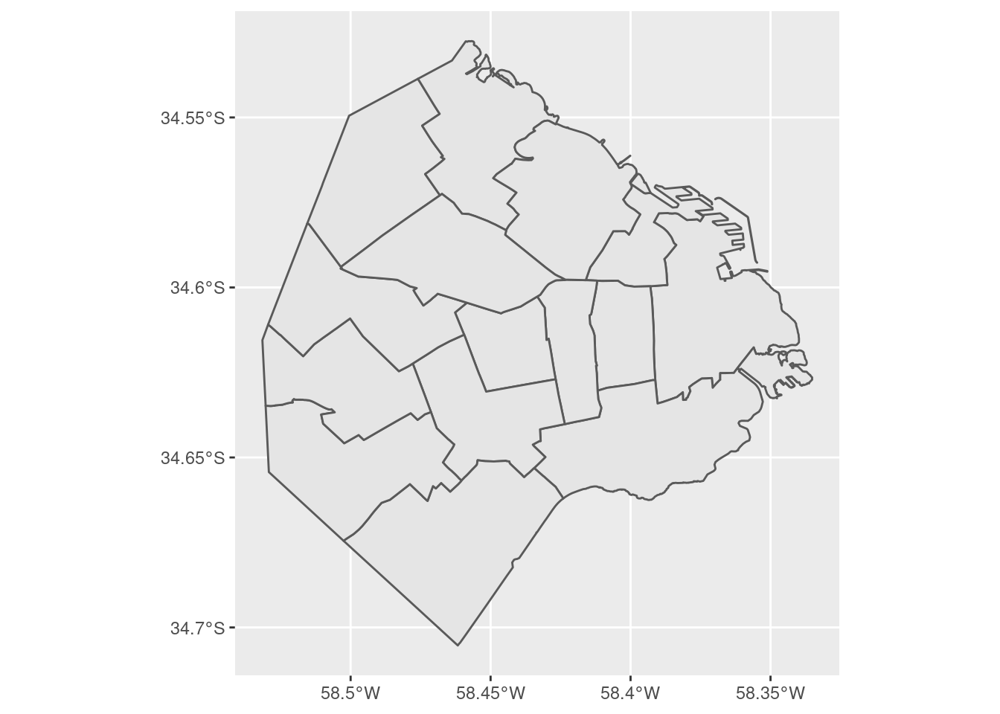

Ahora es vamos a pisar el acelerador. Insisto: nadie debe preocuparse si algunos conceptos parecen ser demasiado complejos. En las próximas secciones practicaremos de forma gradual las técnicas que vamos a usar ahora, y todo tendrá sentido -¡lo prometo!. Pero antes, seamos un poquito irresponsables con el poder de R y empleemos un arsenal sofisticado de herramientas para ver de que somos capaces.
En la introducción hablamos de los paquetes, conjuntos de programas que extienden la funcionalidad de R. Vamos a cargar uno de los paquetes más usados, tidyverse. Tidyverse incluye una gran cantidad de funciones diseñadas por y para practicantes de la ciencia de datos. Estas funciones comparten una filosofía y una sintaxis común, por lo que al aprender una en cierto modo aprendemos a usar todas. El valor que aportan es que, sin dudas, ayudan a realizar de manera más fácil las tareas típicas de la ciencia de datos: importar, limpiar, comprender y comunicar datos.
Si acabamos de instalar R y RStudio, el paquete aún no estará disponible en nuestro sistema. Para instalarlo, usamos la función install.packages() y le pasamos el nombre del paquete deseado, “tidyverse”, entre comillas.
De aquí en más, podremos activar el conjunto de funciones que provee tidyverse cada vez que queramos. Para eso, lo invocamos con la función library():
… y listo para usar. La razón por la cual activamos tidyverse es que en este momento nos vienen bien dos de sus funciones: mutate() para modificar valores, y ggplot() para hacer gráficos.
Bien, llega la hora de los gráficos. Vamos a llamar a la función ggplot(), una auténtica navaja suiza para la visualización.
Por ejemplo, veamos a cuanto asciende la tasa de mortalidad infantil en cada comuna durante 2016:
Para realizar una visualización con ésta herramienta, siempre se comienza con la función ggplot(), que crea un eje de coordenadas sobre el cual se pueden agregar capas. El primer parámetro que recibe ggplot() es el dataset que queremos usar para el gráfico; en nuestro caso, ggplot(mortalidad). Ejecutar sólo ggplot(mortalidad) nos devuelve un gráfico vacío; la gracia está en agregar una o más capas especificando cómo queremos mostrar los datos. Estas capas se agregan con un signo +.
En nuestro ejemplo, geom_col() crea columnas cuya posición en el eje de las x depende de la variable “Comuna”, mientas que la altura (posición en el eje de las y) depende del valor de la variable “Tasa2016”. Existen muchas funciones de tipo “geom_XXX”, que agregan distintas clases de capas al gráfico: geom_point, geom_polygon, geom_text y muchos, muchos más que iremos viendo más adelante.
Cada función “geom_” toma como parámetro un conjunto de definiciones “estéticas” que le indican una variable a graficar (“mortalidad” en nuestro caso), cómo (color, tamaño, etc) y dónde (posición x, posición y del eje). Estos parámetros van siempre dentro de una función auxiliar, aes(). En nuestro ejemplo, “geom_col(aes(x = factor(Comuna), y = Tasa2016))”.
No se preocupen que iremos practicando el uso de ggplot, y su uso se volverá familiar.
En cuanto al gráfico que hemos creado, podemos observar que entre las 15 comunas en la ciudad, la tasa de mortalidad tiene un rango que va de un poco menos de 2,5 a un poco más de 12,5 (esto es, muertes antes del año de vida por cada 10.000 nacimientos).
Pero no se distingue aquello que queríamos comprender: la diferencia entre el norte y el sur de la ciudad. Necesitamos contexto geográfico.
Vamos a presentar un paquete más, el último para éste capítulo: sf. Quizás algunos tengan experiencia con sistemas de información geográfica (GIS por sus siglas en inglés), al estilo de QGIS o ArcGIS, que permiten crear, manipular y combinar archivos con datos espaciales para producir mapas que pueden ser simples o en extremo sofisticados. En R, el paquete sf brinda herramientas que permiten realizar tares similares.
Nuestro objetivo es obtener un mapa de la ciudad de Buenos Aires con sus comunas.
Primero, instalamos sf en caso de que aún no lo hayamos hecho.
Vale la pena insistir: Sólo es necesario instalar los paquetes una vez. De aquí en más, cada vez que queramos echar mano a las funciones incluidas en sf, sólo necesitamos activarlo pues ya estará listo en nuestro sistema. Pedimos a R que active el paquete así:
Luego, cargamos un archivo georeferenciado con las comunas de la Ciudad Autónoma de Buenos Aires, disponible online en formato geojson, un estándar de representación de datos geográficos que es fácil de usar:
## Reading layer `CABA_comunas' from data source `https://bitsandbricks.github.io/data/CABA_comunas.geojson' using driver `GeoJSON'
## Simple feature collection with 15 features and 4 fields
## geometry type: MULTIPOLYGON
## dimension: XY
## bbox: xmin: -58.53152 ymin: -34.70529 xmax: -58.33514 ymax: -34.52754
## geographic CRS: WGS 84Al igual que cuando usamos read.csv() para leer un archivo .csv y cargarlo como un dataframe, el comando st_read() hace lo propio con archivos de información geográfica, conocidos en la jerga como “shapefiles”. El resultado también es un dataframe, por lo cual podemos practicar el uso de las funciones que ya aprendimos, como dim(), names() y head().
## [1] 15 5## [1] "barrios" "perimetro" "area" "comunas" "geometry"## Simple feature collection with 6 features and 4 fields
## geometry type: MULTIPOLYGON
## dimension: XY
## bbox: xmin: -58.4627 ymin: -34.6625 xmax: -58.33514 ymax: -34.56935
## geographic CRS: WGS 84
## barrios perimetro area comunas
## 1 CONSTITUCION - MONSERRAT - PUERTO MADERO - RETIRO - SAN NICOLAS - SAN TELMO 35572.65 17802807 1
## 2 RECOLETA 21246.61 6140873 2
## 3 BALVANERA - SAN CRISTOBAL 10486.26 6385991 3
## 4 BARRACAS - BOCA - NUEVA POMPEYA - PARQUE PATRICIOS 36277.44 21701236 4
## 5 ALMAGRO - BOEDO 12323.47 6660526 5
## 6 CABALLITO 10990.96 6851029 6
## geometry
## 1 MULTIPOLYGON (((-58.36854 -...
## 2 MULTIPOLYGON (((-58.39521 -...
## 3 MULTIPOLYGON (((-58.41192 -...
## 4 MULTIPOLYGON (((-58.3552 -3...
## 5 MULTIPOLYGON (((-58.41287 -...
## 6 MULTIPOLYGON (((-58.43061 -...Podemos ver que el dataframe contiene 15 filas y 5 columnas. Una fila por comuna (es razonable!) y 5 columnas: “barrios”, “perímetro”, “area”, “comunas” y “geometry”. Nuestro vistazo mediante head() permite asumir que “barrios” informa los barrios que componen cada comuna, mientras que perímetro y área informan sobre las dimensiones del polígono cubierto por cada comuna. La columna “geometry” aparece en todos los dataframes de tipo espacial, y es la que contiene los datos con sus coordenadas geográficas.
Y hablando de coordenadas, generar un mapa a partir de un dataframe espacial creado por sf es muy fácil con la ayuda de ggplot

Si queremos agregar una leyenda al mapa que identifique cada comuna con su número, usamos:
Dentro de “aes()” usé el parámetro “fill” (relleno en inglés) para pedirle a ggplot que llene cada polígono con un color distinto de acuerdo al campo “comunas”.
Aprovechando que tenemos un mapa, deberíamos clasificar las comunas entre las que pertenecen al norte y las que pertenecen al sur de la ciudad. No hay una línea divisoria oficial, pero la traza de la Avenida Rivadavia suele ser tomada como frontera: Rivadavia es la “divisoria simbólica del Norte y el Sur de la Ciudad, con sus diferencias de desarrollo”
Por esas casualidades de la vida, tengo un archivo geográfico que contiene la línea que dibuja a avenida Rivadavia al atravesar la ciudad. Lo bajamos:
## Reading layer `avenida_rivadavia' from data source `https://bitsandbricks.github.io/data/avenida_rivadavia.geojson' using driver `GeoJSON'
## Simple feature collection with 1 feature and 1 field
## geometry type: LINESTRING
## dimension: XY
## bbox: xmin: -58.53014 ymin: -34.63946 xmax: -58.37017 ymax: -34.60711
## geographic CRS: WGS 84Y lo proyectamos sobre el mapa, como una capa adicional del gráfico de ggplot que definimos antes:
La identificación por colores no hace fácil reconocer con rapidez que número corresponde a cada comuna; es un recurso que funciona mejor con menos categorías que nuestras 15. Podríamos arreglarlo, por ejemplo evitando la codificación por color, y dibujando una etiqueta con número dibujada sobre cada comuna. ¡Pero no en este momento! En aras de la sencillez, vamos a aguzar la vista y tomar nota de cuales comunas tienen gran parte de su territorio al sur de la Avenida Rivadavia. Según mi interpretación, son las comunas 1, 3, 4, 5, 7, 8 y 9. (Hay que admitir que la comuna 1 parece estar repartida en partes más o menos iguales, pero vamos a dejársela al sur en forma arbitraria para no complicar el ejercicio).
En este punto necesitamos una manera de “etiquetar” cada comuna con el punto cardinal que le toca “Norte” o “Sur”. La forma más rápida es crear una lista con los atributos, y agregarla a nuestro dataframe como una nueva columna.
Podemos armar una sucesión de 15 “etiquetas” según el punto cardinal que le toca a cada comuna. El comando en R que “une” valores en conjunto se llama c() (viene de “combine”, “combinar”), y permite definir una lista de valores. Mejor dicho, un “vector” de valores; en el mundo de la programación, se usa la palabra vector cuando se combinan elementos del mismo tipo, y “lista” cuando se combina una variedad de clases: en el mismo conjunto números, textos, y otros tipos de objeto más complejos. Por ahora, no nos preocupemos por eso.
nueva_columna <- c("Sur", "Norte", "Sur", "Sur", "Sur", "Norte", "Sur", "Sur",
"Sur", "Norte", "Norte", "Norte", "Norte", "Norte", "Norte")
nueva_columna## [1] "Sur" "Norte" "Sur" "Sur" "Sur" "Norte" "Sur" "Sur" "Sur" "Norte" "Norte" "Norte" "Norte"
## [14] "Norte" "Norte"Ya podemos agregar nuestra nueva columna usando una función que ya vimos, mutate(). En el dataframe, vamos a ponerle a nuestra nueva columna un nombre descriptivo, “ubicación” :
Verifiquemos el resultado:
## Simple feature collection with 6 features and 5 fields
## geometry type: MULTIPOLYGON
## dimension: XY
## bbox: xmin: -58.4627 ymin: -34.6625 xmax: -58.33514 ymax: -34.56935
## geographic CRS: WGS 84
## barrios perimetro area comunas
## 1 CONSTITUCION - MONSERRAT - PUERTO MADERO - RETIRO - SAN NICOLAS - SAN TELMO 35572.65 17802807 1
## 2 RECOLETA 21246.61 6140873 2
## 3 BALVANERA - SAN CRISTOBAL 10486.26 6385991 3
## 4 BARRACAS - BOCA - NUEVA POMPEYA - PARQUE PATRICIOS 36277.44 21701236 4
## 5 ALMAGRO - BOEDO 12323.47 6660526 5
## 6 CABALLITO 10990.96 6851029 6
## geometry ubicacion
## 1 MULTIPOLYGON (((-58.36854 -... Sur
## 2 MULTIPOLYGON (((-58.39521 -... Norte
## 3 MULTIPOLYGON (((-58.41192 -... Sur
## 4 MULTIPOLYGON (((-58.3552 -3... Sur
## 5 MULTIPOLYGON (((-58.41287 -... Sur
## 6 MULTIPOLYGON (((-58.43061 -... NorteY en el mapa:
Todo en orden. Ahora hagamos lo mismo con el dataframe de mortalidad, aprovechando que lista las comunas en el mismo orden (del 1 al 15) y por lo tanto podemos “pegarle” el mismo vector de etiquetas con ubicación que ya preparamos.
## Comuna Tasa2016 ubicación
## 1 1 9.5 Sur
## 2 2 3.6 Norte
## 3 3 8.0 Sur
## 4 4 11.9 Sur
## 5 5 8.5 Sur
## 6 6 2.4 Norte